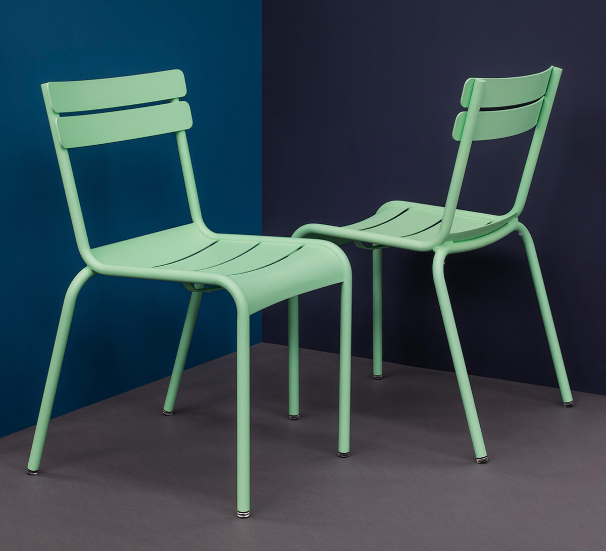
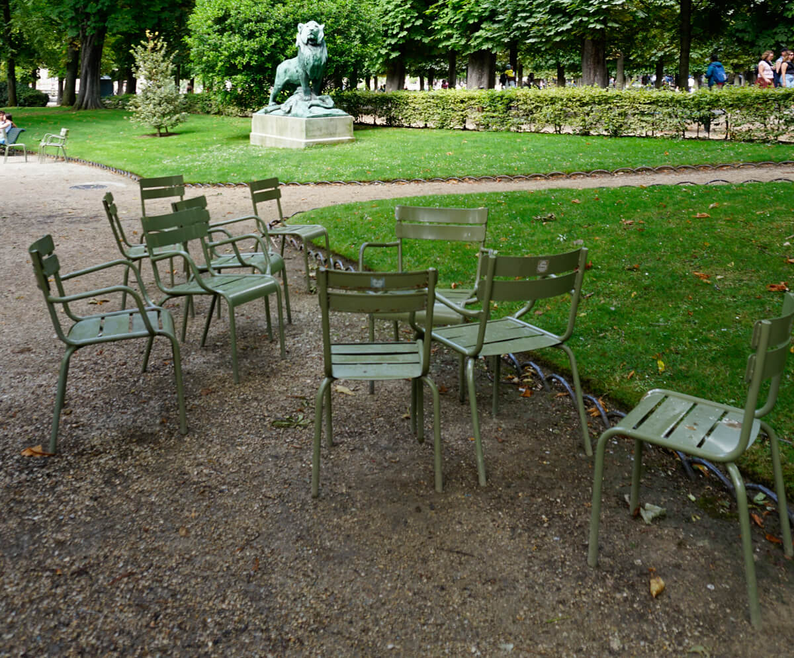
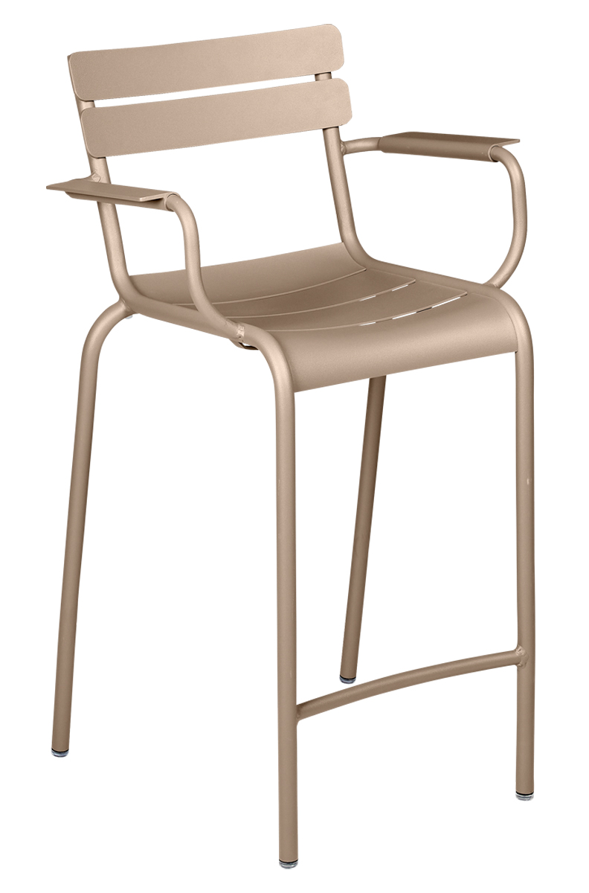
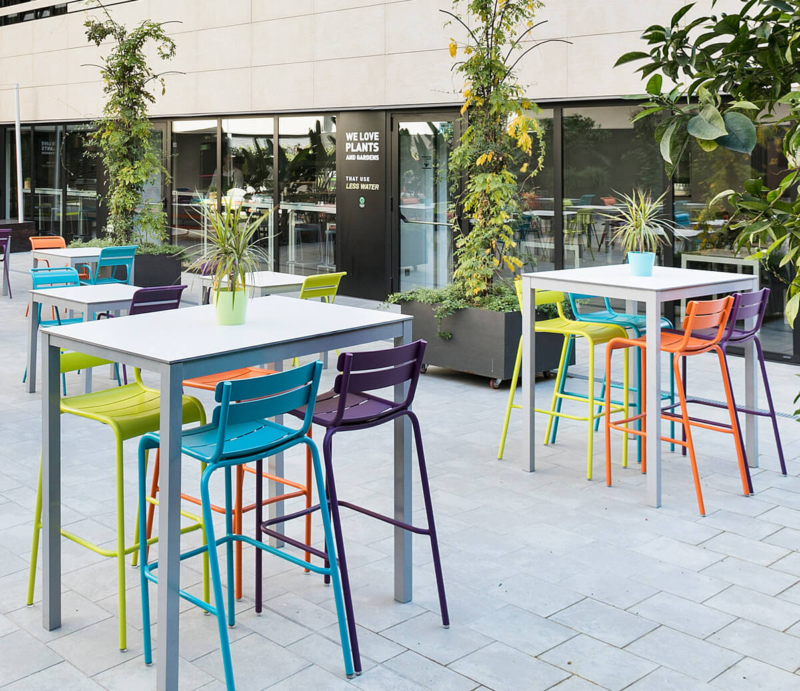
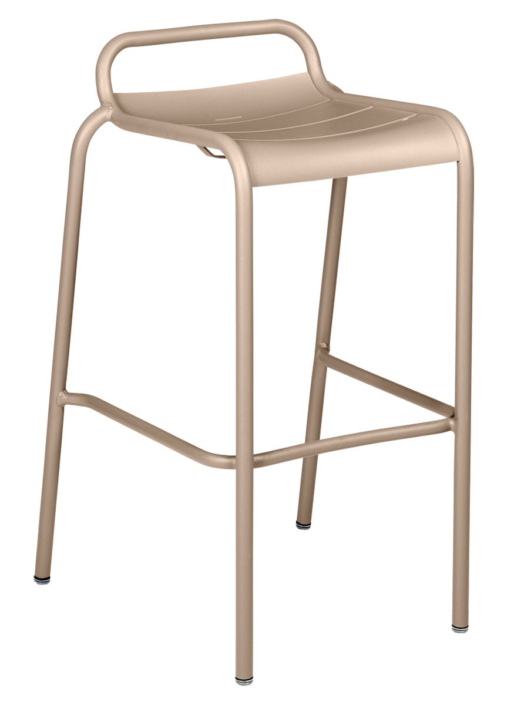

LUXEMBOURG-Stühle
Die Ikone der Pariser Parks in moderner VielfaltDie LUXEMBOURG Stuhlserie ist eine zeitlose Kollektion, die französische Eleganz und praktische Funktionalität perfekt kombiniert. Ursprünglich für den Jardin du Luxembourg entworfen und 2004 neu interpretiert, stehen die Stühle für Komfort, Robustheit und Vielseitigkeit. Hergestellt aus Aluminium, bietet die Serie Modelle für verschiedene Anforderungen und ist in einer breiten Farbpalette erhältlich.
Für den Einsatz in Bildungseinrichtungen und anderen professionellen Bereichen sind die Stühle ideal geeignet. Ob in Pausenbereichen, auf Terrassen oder für das Studieren im Freien – ihre stapelbaren Designs und langlebigen Materialien machen sie besonders praktisch. Die geschwungenen Latten und Armlehnen sorgen dabei für höchsten Sitzkomfort, während Silent-Gleiter eine geräuschlose Nutzung garantieren.
Vom klassischen Stuhl bis zur hohen Bridge oder dem Barhocker – jedes Modell der LUXEMBOURG Serie vereint Design und Funktionalität für inspirierende Außenbereiche. Alle Modelle der LUXEMBOURG Serie sind UV- und witterungsbeständig und in der umfangreichen Farbpalette erhältlich, sodass sie sich harmonisch in jede Umgebung einfügen. Egal ob auf Schulhöfen oder Universitäts-Campi: Die LUXEMBOURG Stuhlserie schafft eine einladende und stilvolle Atmosphäre.





Hier können Sie LUXEMBOURG-Stühle konfigurieren
Modell wählen: